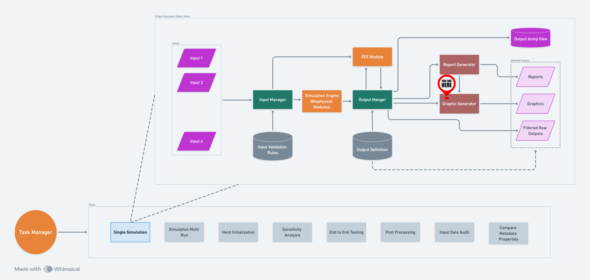
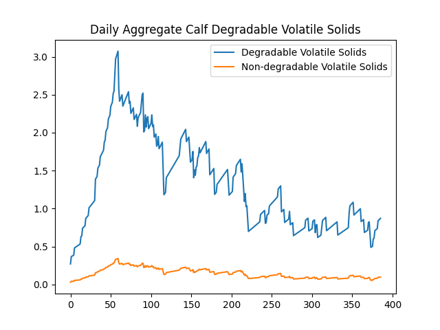
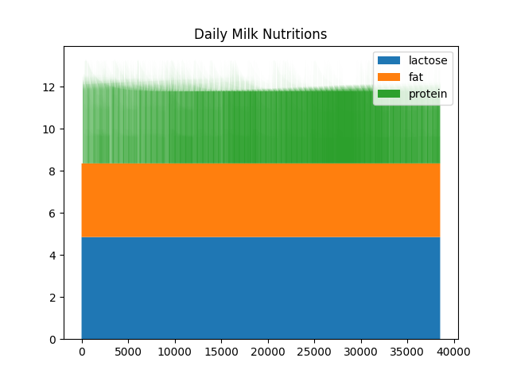
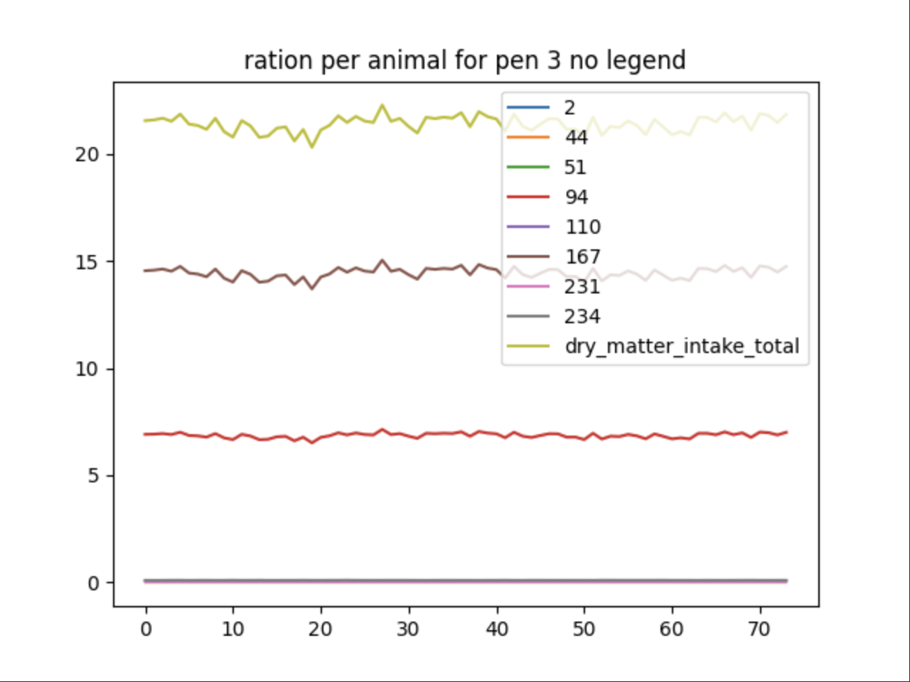
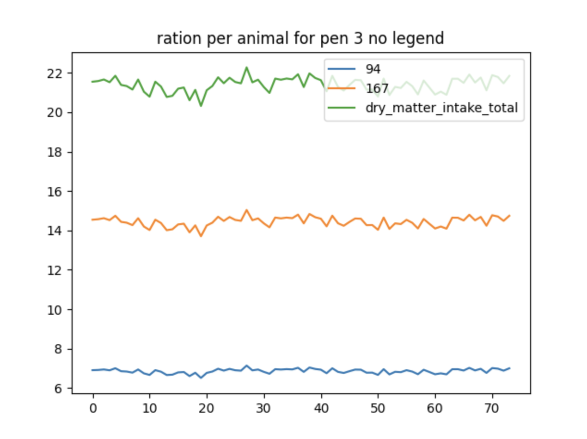
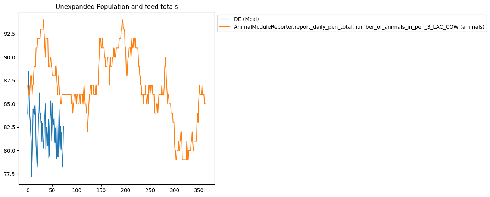
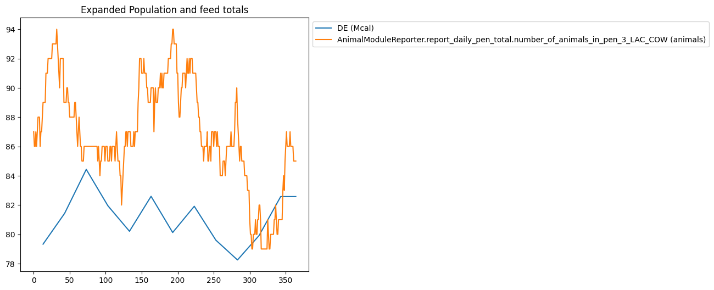
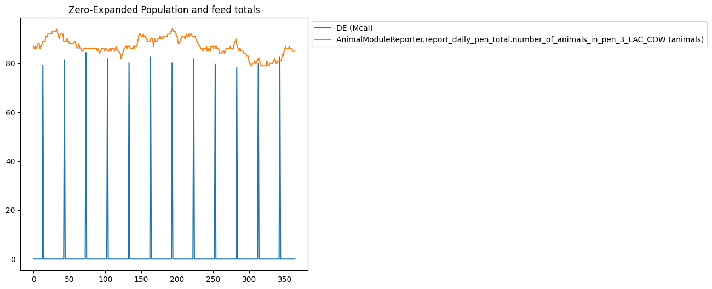
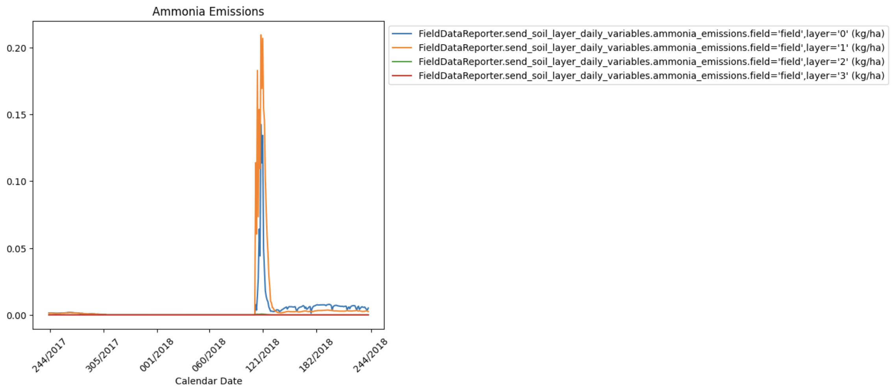

Graph Generator#
Introduction#
The Graph Generator is a tool designed to create plots and graphs from simulation results. It streamlines the process of visualizing data in graphical formats, making it an invaluable resource for data analysis and presentation. Its flexible nature allows for future expansion, ensuring it remains a versatile resource for users. The Graph Generator was initially introduced to the code base in https://github.com/RuminantFarmSystems/MASM/pull/779

A high-level flow of GG within RuFaS.#
Filter Files#
A significant feature introduced by the Graph Generator is the use of
filter files in JSON format. After a simulation, the OutputManager scans
the output filters directory and uses any JSON file whose name begins
with graph_ as a graph filter file. These files are essential for
configuring graph generation and include the following key information:
Type(Required): Specifies the type of the graph to be generated. As of now, “plot” and “stackplot” have been tested, but additional graph types can be added in the future.
Filters(Required): Regular expression-based filters that define which variables from the Output Manager (OM) pool will be plotted on the same graph. This flexibility allows multiple variables to be visualized together.
Variables: When the data is stored in dictionaries (i.e., when reporting the variable to the output manager using
OutputManager.add_variable(), a dict was passed), thevariablesentry allows selecting which variables in the dictionary are being plotted. Regular expression-based patterns can be used in this field as well to select variables to be plotted.Filter By Exclusion: A partner field to the Variables field above. This boolean field allows the user to specify if they want everything in the variables field to be plotted or everything except what’s in the variables field to be plotted.
Customization Details: These include customization options such as legends, titles, and more. The following customization options are currently (Nov 2, 2023) supported:
align_labels,aspect,canvas,constrained_layout,dpi,edgecolor,facecolor,figheight,figsize,figwidth,frameon,grid,legend,snap,subplot_adjust,tight_layout,title,transform,xlabel,xticklabels,xticks,xlim,ylabel,yticklabels,yticks,ylim,yscale,xscale, andzorder. These options enable users to tailor the appearance of their graphs.Legend: Legend is customizable as noted above. However, it is important to note that user-specified legend variables must be alphabetically ordered to match the variables names of the data being plotted on the graph. The variable name here excludes the class and function data sent with the variable to Output Manager. For example, if the variables in the filter are
"^ManureTreatmentDailyOutput_Pen_3_LAC_COW.storage_methane$","ManureHandlerDailyOutput_Pen_3_LAC_COW.air_temperature","ManureHandlerDailyOutput_Pen_3_LAC_COW.housing_methane"the proper alphabetical order of the variables in the legend would beair_temperature,housing_methane,storage_methane. A correctly ordered example legend for this graph could be [“Temp in C”, “Methane from Housing”, “Another Methane Source - Storage”]. Note that these names can be whatever the user specifies. They don’t need to be alphabetical themselves as long as their order matches the alphabetical order of the original variable names. If the legend field is not included in the filter file, Graph Generator will automatically populate a legend based on the keys of the data prepared to be plotted in the correct order and properly matching the data plotted on the graph. This feature can be particularly helpful when using Regular Expression-based filtering on the data sent to be plotted.Display Units: Units the variables are measured in during the simulation are automatically displayed in the graph legend. To turn this feature off, set
"display_units": falsein the graph filter.Omit Legend Prefix/Suffix: It may be desired by the user to remove the prefix or suffix from a variable for display in the graph legend because of the length of the variable name. To achieve this, set
"omit_legend_prefix": trueor"omit_legend_suffix": true. Note: this feature only works if there is a suffix/prefix added to the variable when it’s added to the Output Manager during the simulation.Expand Data: Graph filters support the same data expansion options that Report filters do: “expand_data”, “fill_value”, “use_fill_value_in_gaps” and “use_fill_value_at_end”. Please refer to the Report Generator wiki for an explanation of how these function. Graph filters support one additional option, “mask_values”. This is a boolean flag which essentially removes
nanvalues from data that is being graphed, resulting in much better looking graphs when gaps are filled withnan.Use Calendar Dates: User can specify whether they want to have dates along the graph’s x-axis instead of the raw simulation day. This is a boolean flag
use_calendar_dateswhich is set tofalseby default. The user can also specify the format of the date along the x-axis using thedate_formatoption (see examples below).Specify Significant Digits of Graphed Data: User can specify the number of significant digits to which the data being graphed is rounded by setting the
data_significant_digitsto the desired number of digits past the decimal point.Use Fill Value in Gaps: If true, values added between original values will be the fill_value. If false, then the last seen original value will be used.
Use Fill Value At End: If true, values added after the last original value will be the fill_value. If false, then the last seen original value will be used.
Mask Values: If true, will mask all nan values in the data that is graphed and results in a much better graph.
Title: Title of the graph.
Slice Start: Index to start slicing data for the report.
Slice End: Index to end slicing data for the report.
Supported Graph Types#
The Graph Generator supports various graph types, with the flexibility to add more in the future. The currently supported graph types are:
barbsboxplothexbinhistogrampieplotpolarquiverscatterspystackplotstemviolin
Command Line Options#
The Graph Generator can be controlled through command line options. Here are the available options:
-g, –no-graphics: This option allows you to prevent the generation of graphics. When specified, no graphical plots or charts will be created.
-G, –graphics_dir: Use this option to specify the directory where the generated graphics will be saved. By default, graphics are saved in the “graphics” directory. This option gives you control over the location where the output graphs will be stored.
Example JSON Filters#
Data is scalar values#
In this example, the data was reported to the OutputManager as scalar values. To illustrate the configuration of graph generation, consider the following example of a JSON filter:
{
"type": "plot",
"filters": [
"Pen\\.calc_total_manure\\.daily_aggregate_calf_(degradable|non_degradable)_volatile_solids"
],
"title": "Daily Aggregate Calf Degradable Volatile Solids",
"legend": ["Degradable Volatile Solids", "Non-degradable Volatile Solids"]
}
This JSON filter specifies a “plot” type, applies regular expression filters to select specific variables in the Output Manager’s variables pool, and customizes the graph’s title and legend. It produces:

Data is in Dictionaries#
In this example, the data was reported in dictionaries. To illustrate the configuration of graph generation, consider the following example of a JSON filter:
{
"type": "stackplot",
"filters": ["Cow\\.milking_update\\.milk_data_at_milk_update"],
"variables": ["milk_lactose", "milk_protein", "milk_fat"],
"title": "Daily Milk Nutritions",
"legend": ["fat", "lactose", "protein"]
}
This JSON filter specifies a “stackplot” type, applies regular
expression filters to select specific variables in the Output Manager’s
variables pool, selects milk_lactose, milk_protein, and
milk_fat in each instance, and customizes the graph’s title and
legend. It produces:

Filtering using Regular Expression Patterns#
The same ability Output Manager uses to filter data collected during a simulation can be extended to a graphing filter file. The data sent to Graph Generator to be plotted can be further filtered using RegEx. The legend field here is left blank and will be automatically generated based on the RegEx-filtered pool keys:
{
"type": "plot",
"filters": [
"AnimalManager\\._calc_ration_at_interval\\.ration_per_animal_for_pen_3"
],
"title": "ration per animal for pen 3 no legend",
"variables": [".*"]
}

Using Filter By Exclusion#
This is a slightly different way to do a similar graph as the previous
example. This time excluding all the data that is cluttered together at
the bottom by using the filter_by_exclusion boolean:
{
"type": "plot",
"filters": [
"AnimalManager\\._calc_ration_at_interval\\.ration_per_animal_for_pen_3"
],
"title": "ration per animal for pen 3 no legend",
"variables": ["2", "33", "44", "51", "110", "231", "234"],
"filter_by_exclusion": true
}

Multiple graphs in a single filter file#
It is possible to define more than one graph in a single JSON filter
file. If the key multiple is present in the file, then its value is
expected to be a list of JSON blobs, each of which is the definition for
a graph. We can combine the two examples above into one single JSON
file:
{
"multiple": [
{
"type": "plot",
"filters": [
"AnimalManager\\.daily_updates\\.daily_aggregate_calf_(degradable|non_degradable)_volatile_solids"
],
"title": "Daily Aggregate Calf Degradable Volatile Solids",
"legend": ["Degradable Volatile Solids", "Non-degradable Volatile Solids"]
},
{
"type": "stackplot",
"filters": [
"AnimalManager.daily_updates.(num_calves|num_heiferIs|num_heiferIIs|num_heiferIIIs|num_lactating_cows|num_dry_cows)"
],
"title": "Herd composition (stackplot)",
"legend": ["num_calves","num_dry_cows","num_heiferIs","num_heiferIIs","num_heiferIIIs","num_lactating_cows"]
}
]
}
Expanding Data#
Using data expansion in graphing filters can be tricky, so the following filter has been provided which illustrates how the same data can graphed with different combinations of data expansion options.
{
"multiple": [
{
"title": "Unexpanded Population and feed totals",
"type": "plot",
"filters": [
"AnimalModuleReporter.report_ration_interval_data.ration_nutrient_amount_pen_3_LAC_COW",
"AnimalModuleReporter.report_daily_pen_total.number_of_animals_in_pen_3_LAC_COW"
],
"slice_start": -365,
"variables": ["DE"]
},
{
"title": "Expanded Population and feed totals",
"type": "plot",
"filters": [
"AnimalModuleReporter.report_ration_interval_data.ration_nutrient_amount_pen_3_LAC_COW",
"AnimalModuleReporter.report_daily_pen_total.number_of_animals_in_pen_3_LAC_COW"
],
"variables": ["DE"],
"slice_start": -365,
"expand_data": true,
"mask_values": true,
"use_fill_value_in_gaps": true,
"use_fill_value_at_end": false
},
{
"title": "Zero-Expanded Population and feed totals",
"type": "plot",
"filters": [
"AnimalModuleReporter.report_ration_interval_data.ration_nutrient_amount_pen_3_LAC_COW",
"AnimalModuleReporter.report_daily_pen_total.number_of_animals_in_pen_3_LAC_COW"
],
"variables": ["DE"],
"slice_start": -365,
"expand_data": true,
"fill_value": 0,
"use_fill_value_in_gaps": true,
"use_fill_value_at_end": true
}
]
}



Using Calendar Dates On X-Axis#
This feature works with or without data slicing. Here are some example date format options:
%j/%Y: “Julian_day/Year” which would look like “234/2022”.%d/%m/%Y: “Day/Month/Year” which would look like “23/12/2024”.%m/%d/%Y: “Month/Day/Year” which would look like “12/23/2024”.%b/%d/%Y: “Month_abbreviation/Day/Year” which would look like “Dec/23/2024”.%B/%d/%Y: “Month_full_string/Day/Year” which would look like “December/23/2024”.%m/%d/%y: “Month/Day/Year_without_century” which would look like “12/23/24”.This is %m-%d-%Y: “This is Month-Day-Year” which would look like “This is 12-23-24”
%d/%m/%Y is the default.
{
"type": "plot",
"filters": [
".*daily.*ammonia_emissions.*"
],
"title": "Ammonia Emissions",
"slice_start": -365,
"slice_end": -1,
"use_calendar_dates": true,
"date_format": "%j/%Y"
}
